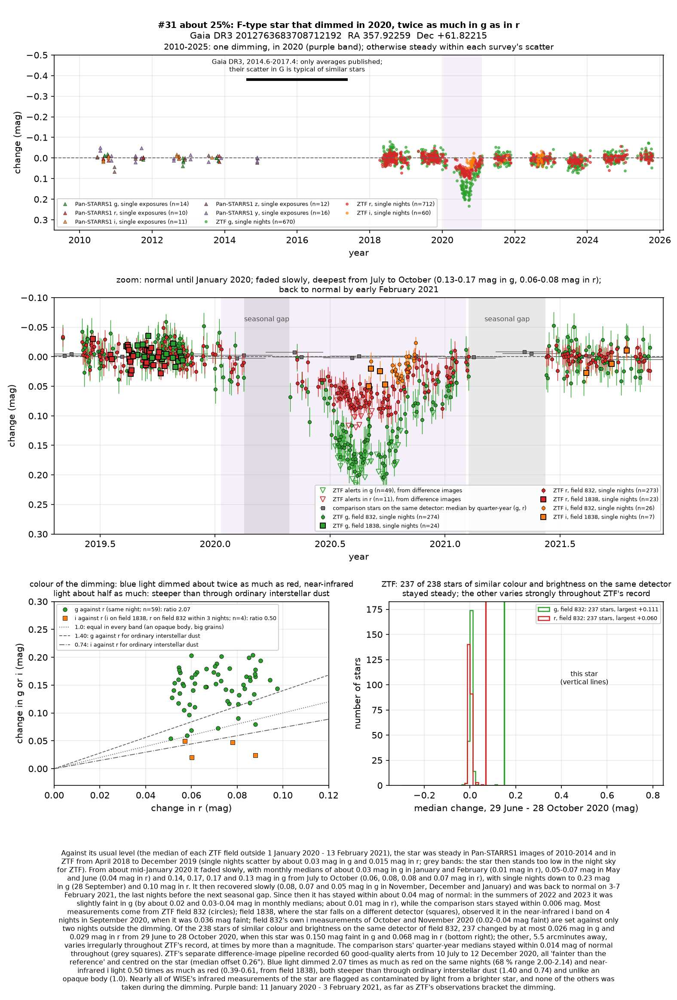
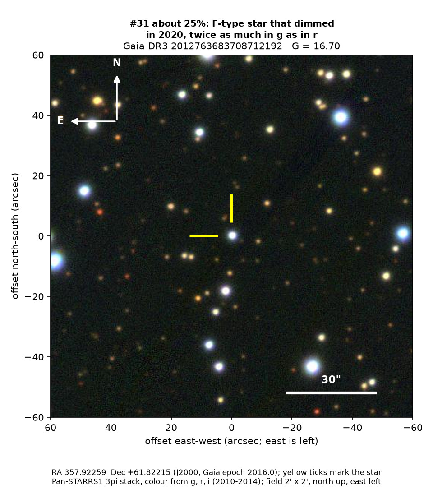
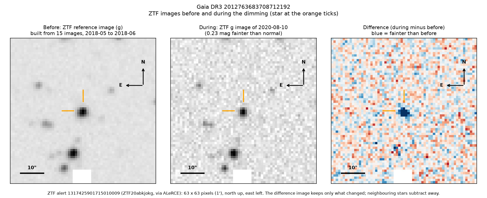

Professor of Mathematics
Paata Ivanisvili
Department of Mathematics, University of California, Irvine

Candidate 31: an F-type star that dimmed for a year, with an unusual colour
Why this estimate. The dimming is almost certainly real: the ZTF survey telescope at Palomar Observatory in California measured it on more than a hundred nights while 237 of the 238 stars of similar colour and brightness on the same detector stayed steady, and a second ZTF detector saw it in near-infrared light. Both its start and its end were observed. But only ZTF recorded it, its colour fits neither ordinary dust nor starspots nor an opaque body, the star may be young, and there is no spectrum.
How to read the pictures. The finder chart shows a patch of sky two arcminutes across, about a fifteenth of the Moon’s width, with north up and east to the left. The star sits between the two yellow ticks, and the white bar is 30 arcseconds long. On a light curve the vertical axis is magnitude, a brightness scale on which larger numbers mean fainter stars, and it is drawn so that down means fainter. Purple shading marks the dimming, and grey shading the months when the star could not be observed. Each survey uses slightly different filters, so each is compared with its own normal level. The ZTF pictures show ZTF’s reference image of the star, an image taken during the dimming, and the difference between the two, in which only what changed remains: blue means fainter and red brighter.

What changed. The star is an F-type star, hotter and more massive than the Sun and a few times as luminous, some 2,700 parsecs (8,800 light-years) away in the plane of the Milky Way, towards the Perseus spiral arm. ZTF saw it steady from 2018 to the end of 2019. From about January 2020 it faded slowly, and from July to October 2020 it had lost about a seventh of its green light but only about a fifteenth of its red light. It then recovered slowly and was back to normal by early February 2021, and it has stayed close to normal since. ZTF’s alert system, which compares each new image with a reference image, flagged it 60 times in the second half of 2020, and at no other time.
Why it might matter. The colour is unusual. Green light dimmed 2.07 times as much as red, and near-infrared light only 0.50 times as much, whereas ordinary interstellar dust gives about 1.40 and 0.74, an opaque body would dim all colours equally, and starspots, weak on a star this hot, would dim green only a little more than red. It fits either dust with grains smaller than about a tenth of a micron, which starlight clears out within about an orbit, so the dust would have to be fresh, as from a recent collision; or a very hot companion or hot gas that faded or was hidden for a year. An eclipse by another star would last hours or days, not a year, and an instrumental fault, though unlikely, cannot be excluded entirely.
A young star, varying in a known way, is the main alternative: the star lies just outside the 20-million-year-old cluster King 12, at the same distance, and its hydrogen line in Gaia’s spectra is weaker than expected, perhaps partly filled in by emission. But it moves about 8 km/s differently from King 12, whose stars share their motion to within one or two km/s, and shows no warm dust. A spectrum would show whether it is young, has hot gas or a disc, or has a hot companion.
No record of the dimming could be found. SIMBAD has no entry for the star, Gaia lists no variability, and VSX, the variable-star index, has nothing within 30 arcseconds. It is in none of the variable-star, young-star or cluster catalogues consulted, nor among the dimming stars of Tzanidakis et al. (2025), and there is no Transient Name Server entry, Gaia alert or paper giving its Gaia number. ZTF’s alert system holds only machine-generated classifications for it.
- Star
- Gaia DR3 2012763683708712192, an F-type main-sequence star of spectral type about F3
- Location
- RA 357.92259°, Dec +61.82215° (J2000), in Cassiopeia, 0.24 degrees south of the Milky Way’s mid-plane
- Distance
- about 2,700 parsecs (8,800 light-years)
- Brightness
- Gaia G = 16.70, far too faint for the eye or a small telescope
- Probability
- This candidate is unconfirmed. The percentage under the title is an estimate of the chance that it is a real, previously unrecorded case of the kind described. The estimate has not been checked by outside experts. See the introduction to all fifty-eight candidates.
- Caveat
- There is no spectrum, and no second survey confirms the dimming: ASAS-SN, a worldwide network of small telescopes, has no light curve of the star, and nearly all measurements by WISE, NASA’s infrared space telescope, are contaminated by a brighter star. The star was again slightly faint in green light in the summers of 2022 and 2023. Seven stars on other ZTF fields, 8 to 103 degrees away, dimmed partly at the same time, most likely by chance: candidate 13, candidate 14, candidate 17 (another F-type star with a steep colour), candidate 20, candidate 22, candidate 23 and candidate 27.

